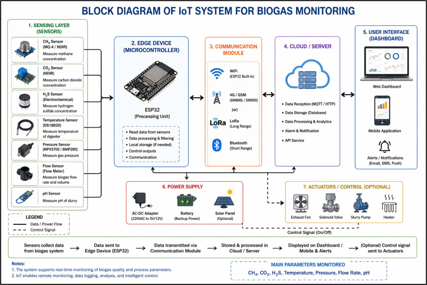
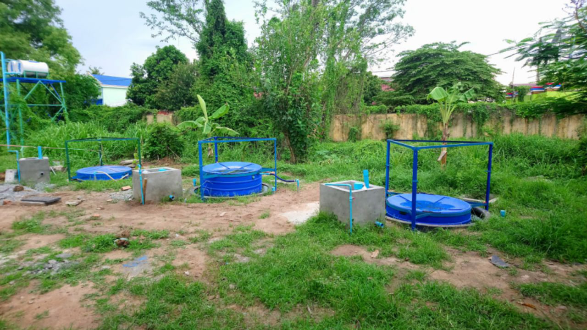
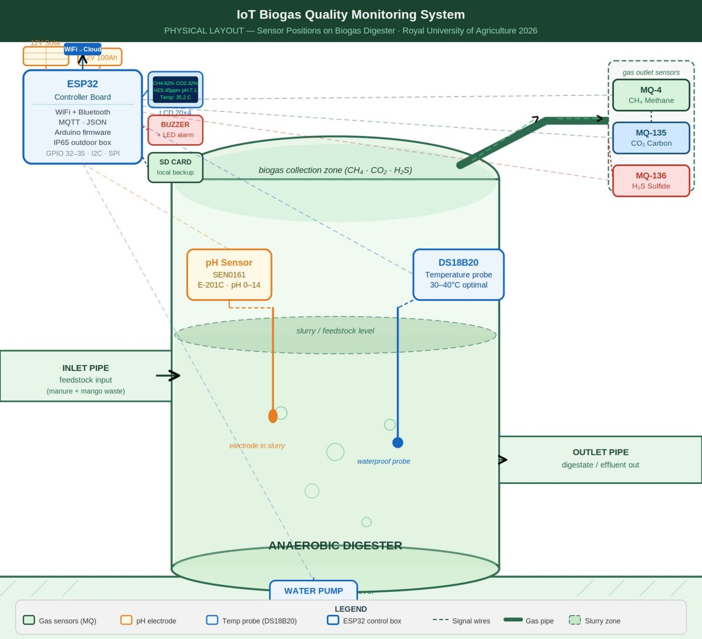
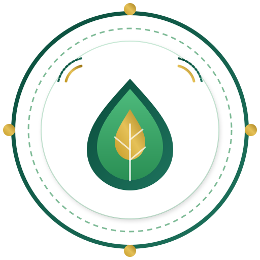

Methane
—
% CH₄
Optimal range: 55–70%
RUA Biogas Monitoring — FABE Laboratory
Incorrect password. Please try again.
Basic access screen for the lab dashboard — not a secure authentication system. Change the password in the page source before sharing this link.
Verifying access and preparing device monitor...
Royal University of Agriculture
This dashboard displays real-time monitoring data for biogas quality and digester conditions, including methane, carbon dioxide, hydrogen sulphide, temperature, pH and gas pressure.
Purpose: To support real-time monitoring and evaluation of small-scale biogas systems using Internet of Things technology.
Photos of the sensor unit and the BTIC biogas digester at FABE Laboratory. Drop your own site photos into the images/ folder using the filenames below to replace these placeholders.






images/. For the browser tab logo, replace images/app-logo.svg. For header logos, use images/rua-logo.png and images/btc-biogas-logo.png. Extra photo slots use sensor-installation.jpg, gas-sampling.jpg, laboratory-test.jpg, and field-monitoring.jpg.
Browse previously recorded sensor readings from this device. Use the filter to narrow the time range, or export the table as a CSV file.
| Timestamp | Methane (%) | CO₂ (%) | H₂S (ppm) | Temp (°C) | Humidity (% RH) | pH | Pressure (kPa) | Status |
|---|
Monitor device connectivity, data delay, Wi-Fi signal, Firebase listener status, and sensor health for RUA-Biogas-01.
This list is saved in Firebase Realtime Database so you can see who logged in, which device/browser was used, and the date/time.
| Who | Device | Browser | Login Date / Time |
|---|---|---|---|
| Login history will appear after Firebase is connected. | |||
Biogas is a renewable fuel produced when organic matter — such as animal manure, food waste, or crop residue — breaks down in the absence of oxygen. It is mainly composed of methane (CH₄) and carbon dioxide (CO₂), with smaller amounts of hydrogen sulphide (H₂S), water vapour, and other trace gases.
Small-scale digesters like RUA-Biogas-01 are commonly fed with cattle or pig manure, poultry litter, food waste, and crop residues. Mixing feedstocks and maintaining a steady feeding schedule generally produces more stable gas output.
This dashboard helps researchers and students at FABE Laboratory monitor the quality and safety of a small-scale biogas digester in real time. The sections below explain what each sensor measures and what the status colors mean.
This system was developed at the FABE Laboratory, Royal University of Agriculture, in collaboration with the Biogas Technology and Innovation Center (BTIC). Device RUA-Biogas-01 monitors a small-scale biogas digester powered by solar / 12V supply.